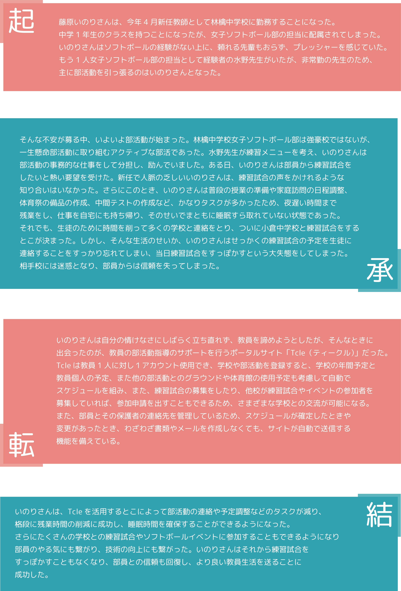
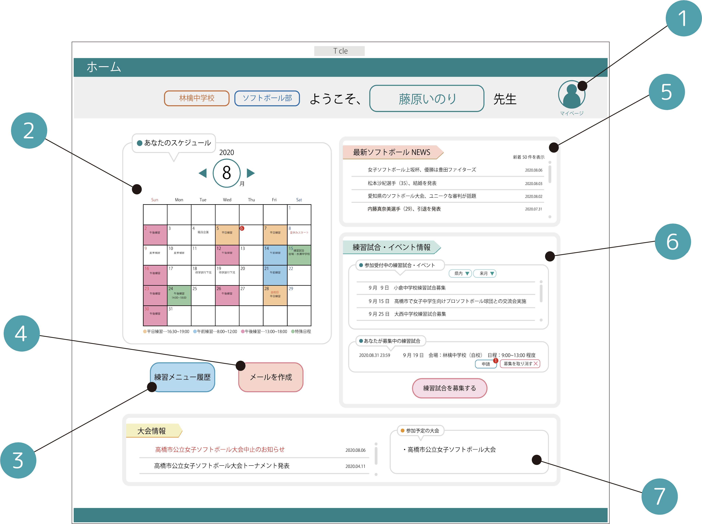

Tcle
2020 ポータルサイト企画
-
-
作品紹介
学校教諭専用の部活動管理ポータルサイト「Tcle（ティークル）」です。
学校教諭の過剰な残業時間は現代の深刻な社会問題の1つでもあります。教員の負担を減らすため、残業時間の原因の1つである
部活動のスケジュール管理や生徒への連絡などスムーズに行います。
この作品を通して、いかに学校教員が過酷な労働を強いられているかを知ってもらえるきっかけにしたいです。
-
-
ペルソナ …内気な新米教師
藤原いのり
愛知県出身の22歳。中学校の新人教師、担当科目は国語で、
趣味は読書、料理、裁縫。通勤手段は自動車。
４月から林檎中学校で中学1年生の担任をすることになった。
運動は得意ではないが、女子ソフトボール部の顧問をしている。
性格は内気で大人しく、自ら積極的にコミュニケーションをとることは苦手。
非常に忘れっぽく、焦ると失敗を起こしやすい。失敗を引きずりやすい。
そんな自分に自信がなく、自分に対しとことん「マイナス思考」である。
しかし、教師という仕事に熱い情熱を持っており、
生徒たちのために日々努力している。

-
-
制作過程
-

-
シナリオの制作
ペルソナが何に困っていて、ポータルサイトを使用することでどう問題が解決されるのか、
具体的なシナリオにおこします。
ペルソナが新米教師であることと現代の教師が多忙であることを最重要事項として念頭に置き、
まだ業界で人脈の乏しい新人が、1人でやり慣れない複数のタスクをこなすことが
心身ともにストレスになっていると考え、そのストレス軽減につながるポータルサイトの活用をシナリオにしました。
サイトを使わなかった時の失敗と、サイトを使ったことによるペルソナのタスク達成までをシナリオにして、
サイトの有効性をわかりやすく対比させました。

-

-
サイトの内容をより具体的にする
ペルソナの需要を満たすサイトの内容を具体的に
書き出し、アイデアをまとめます。
新任ならではの悩みや、残業を減らすための機能など
サイトに必要な事項を端から端まで書き出します。
-

-
「低品質の」プロトタイプ
「Tcle」の具体的なデザインや機能を考え、低品質のプロトタイプを作成します。
はじめは教員が手軽にサイトを活用できるように、スマートフォン版のサイトを作成しようとしましたが、
スマートフォンでは1画面で得ることができる情報量が少なく、スクロールの数が増えてしまったり
複数の機能を持ち合わせたサイトにしたかったため、小さな画面では操作が困難になってしまいました。
さらに、生徒の個人情報を扱うため、学校外での使用は情報漏洩に繋がってしまうと考え、
これらを考慮して、学校の教員用のPCで使用できるサイトに変更しました。

-
-
使用方法
-
-
マイページ
ホームの右上の人型アイコンを押すと、マイページになります。
自身が登録しているプロフィールとアカウント情報を確認できます。
プロフィールは年度が変わるごとに更新され、転勤や担当の部活動に
変更があれば、その都度変更されます。
詳細設定では、スケジュールが決定したり変更があったときに
「ON」に設定することで、部員に自動でメールを送信します。
「OFF」に設定すると、送信を手動で行うこともできます。
部員や保護者の連絡先を登録すれば一括で管理されるため
登録のある連絡先のみに連絡することが可能です。
また、Tcleはサイトを使用するときは必ずパスワードによる
ログインが必要になるため、部員と保護者の個人情報の
情報漏洩を防ぎます。

-
-
カレンダー
カレンダーで部活動の大まかな日程を組むことができます。
学校の年間予定と教員個人の予定、他の部活とのグラウンドや体育館の使用予定も考慮して部活スケジュールを作成します。
詳細設定を「ON」にしていれば、月初めになるとその翌月の予定表が自動で部員に送信されるようになっています。
また、スケジュールを変更したい日付のマス目を右クリックで部活の予定のキャンセル・変更・追加などができ、
変更があればその都度部員に新しいメールが送信されます。
-
-
練習メニュー履歴
マイページの詳細設定の練習メニューの自動作成を「ON」にすると、サイトが自動的に部活動の練習メニューを作成します。
いつどんなメニューをやったのか、明日のメニューは何かを確認するときに使用できます。
-

-
メールの作成
部員や部員の保護者に個人・全員にメールを送りたいときに使用することができます。
必要な連絡先を登録することが可能であるため、膨大な数の連絡先を教員のプライベートの電話帳に登録しなくても済みます。
-

-
最新ソフトボールNEWS
教員が担当している部活動の競技（種類）によって、その部活動に合わせて競技（種類）の最新の記事を読むことができます。
部員との会話のきっかけや話題になったり、指導の際に引用などの参考にもすることができます。
-

-
練習試合・イベント情報
新任教師のような教員の業界での人間関係が少ない人でも、多くの学校と練習試合やイベント参加が行えるようにするために、
自ら練習試合の募集をかけたり、他の学校が募集してる練習試合を閲覧することができ、参加申請を送ることができます。
地域の範囲を絞ったり、月単位で範囲を絞って検索することもできます。

-
①他校が募集中の練習試合に参加したいとき
ホーム画面の他校の練習試合募集一覧から条件の
いい練習試合があれば参加申請を出すことができます。
相手の承認が手動であれば、相手校が承認した
時点で両学校の教員・部員にメールが送信されます。
-
②自分が募集をかけたとき
自分が募集した練習試合の内容を確認できます。
自身の学校を会場にする場合は、学校の外観や
グラウンドの写真・地図が自動で添付されます。
参加申請がきて学校名と内容を確認し承認すれば
練習試合成立、練習試合の要項が書かれたメールが
両校の教員・部員に自動送信されます。


-
③新しく練習試合を募集するとき
練習試合の募集をかけることができる
必要な要項はテンプレートで準備されているため、
必要事項を入力・選択して「この内容で募集する」を
クリックで募集が完了します。
-
大会情報
学校に連絡される部活動の各競技（種類）ごとの大会の情報を確認することができます。参加予定の大会の表示で確認ができ、
詳細設定の大会からのメールを部員に自動転送を「ON」にすると自動で大会からの連絡を部員に送信できる。
-
-
使用ソフトウェア